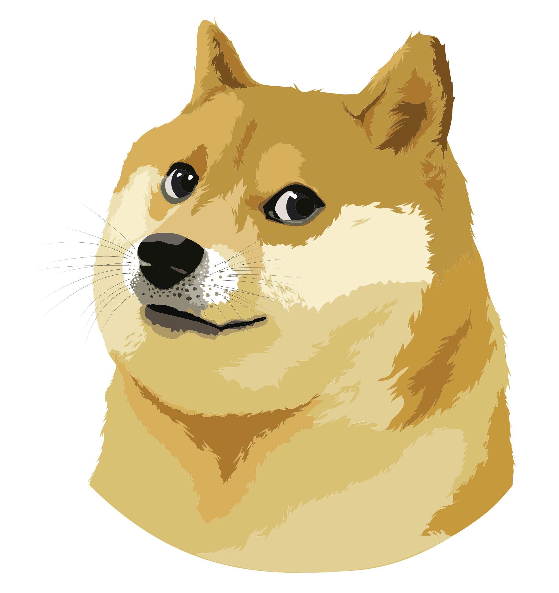

InfoThe Shiba's frame is compact with well-developed muscles. Males are 35 to 43 cm (14 to 17 in) at the withers. Females are 33 to 41 cm (13 to 16 in). The preferred size is the middle of the range for each sex. Average weight at preferred size is approximately 10 kg (22 lb) for males, 8 kg (18 lb) for females. Bones are moderate.
The Shiba is double coated, with the outer coat being stiff and straight and the undercoat soft and thick. Fur is short and even on the fox-like face, ears, and legs. Guard hairs stand off the body and are about 4 to 5 cm (1 1⁄2 to 2 in) long at the withers. Tail hair is slightly longer and stands open in a brush. Shibas may be red, black and tan, or sesame (red with black-tipped hairs), with a cream, buff, or grey undercoat.
contactEmail: doge@doge.com
Phone: 123456789
Address: dog kingdom